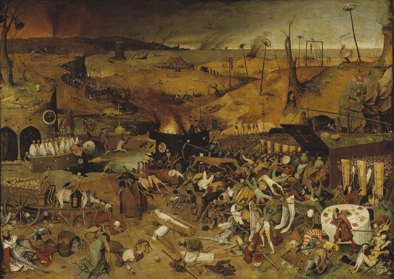

Царица грозная чума
Теперь идет на нас сама
И льстится жатвою богатой,
И к нам в окошко день и ночь
Стучит могильною лопатой.
Что делать нам? И чем помочь?
А.С.Пушкин "Пир во время чумы"

В то время некоторые лекари обвиняли в распространении эпидемии корабельных крыс. Чтобы выяснить, обоснованны ли были эти обвинения, скажем несколько слов об этом биче Европы Средних веков и эпохи Возрождения.
Причины возникновения чумы были неизвестны вплоть до конца XIX века. Существует гипотеза, согласно которой чума была завезена в Западную Азию купцами из Китая, которые носили меховую одежду, заражённую чумными блохами. В 1347 г. крымские татары, среди которых уже вовсю свирепствовала чума, осадили Каффу, крымский порт, населённый в основном итальянскими купцами. Крымские татары едва ли не первыми в истории применили биологическое оружие. Татарский хан Джанибек приказал своим людям катапультировать чумные трупы через городские стены, чтобы заразить жителей города. Эта тактика дала результаты, намного превосходящие самые смелые ожидания Джанибека. Когда итальянцы в Каффе стали заболевать, они побежали на родину – в Геную, Мессину и Венецию. В конце 1347 и в начале 1348 г. именно эти города в наибольшей степени ощутили на себе, что такое «чёрная смерть».
В Мессине охваченные паникой жители изгнали всех заражённых моряков, и сами оставили город. Однако им не только не удалось остановить эпидемию, но они занесли болезнь и в другие места. В июне 1348 г. чума достигла Парижа. Тем же летом она распространилась, вероятно тоже морским путем, до портов юго-западной Англии. На Лондон болезнь обрушилась в начале 1349 г., а на Шотландию – в декабре того же года. Перебравшись через Северное море, чума на протяжении 1350 г. опустошила Скандинавию.
Чума не щадила никого. Она косила горожан, деревенских жителей, бедных и богатых, половина 90-тысячного населения Флоренции умерла. Могильщики, или беккини, рискуя заболеть, собирали и хоронили трупы. За это они получали имущество умерших и денежное вознаграждение от живых.
После эпидемии общество осознало пользу изоляции. В 1383 г. заражённые корабли пришедшие в Марсель, были задержаны на 40 дней на «карантин», от итальянского quaranta, т.е. «сорок» Эта мера лишь частично способствовала установлению контроля за распространением чумы. Тогда еще не знали, что переносчик инфекции – крысы и блохи – передвигались без всяких ограничений.
Только в самом конце XIX века франко-швейцарский учёный Александр Ерсин (Alexandre Yersin), исследуя вспышку чумы в Гонконге, обнаружил её возбудителя. Все формы «чёрной смерти» вызываются бактерией Pasteurella pestis, которая в естественных условиях в небольших количествах встречается у некоторых грызунов. Бактерии распространяются крысиной блохой Хenopsylla cheopis. Блоха кусая животное – носителя чумной бактерии, заражается сама. Понадобится еще почти полвека, пока З. Ваксман и его коллеги синтезируют стрептомицин, который окажется эффективным против возбудителя чумы.
Правда ли, что распространению чумы способствовали корабельные крысы, или это только легенда, но количество добровольцев для службы на галерах резко сократилось. Тем более, что резкое сокращение рабочей силы в результате эпидемии повысило спрос на куда более престижные профессии. Во всех странах Средиземноморья стали искать решение этой проблемы. В Светлейшей для заполнения образовавшейся бреши первоначально попытались использовать добровольцев из колониальных владений Венеции на материке. Но они не имели опыта морских профессий, и поэтому были плохими гребцами. Несколько попыток решить эту проблему сделал известный нам уже Ветторе Фаусто, который намеревался так изменить конструкцию галер, «чтобы ими так же легко могли управлять жители материковой части, как и моряки из Леванта.».
Если в Венеции еще как-то пытались избежать использования на веслах невольников, то в Генуе вопрос был решен окончательно и бесповоротно, и подавляющую часть гребцов составляли рабы и каторжники.
В истории галер началась мрачная эпоха галерных рабов, а вместе с ней и переход на новую систему гребли a scaloccio.